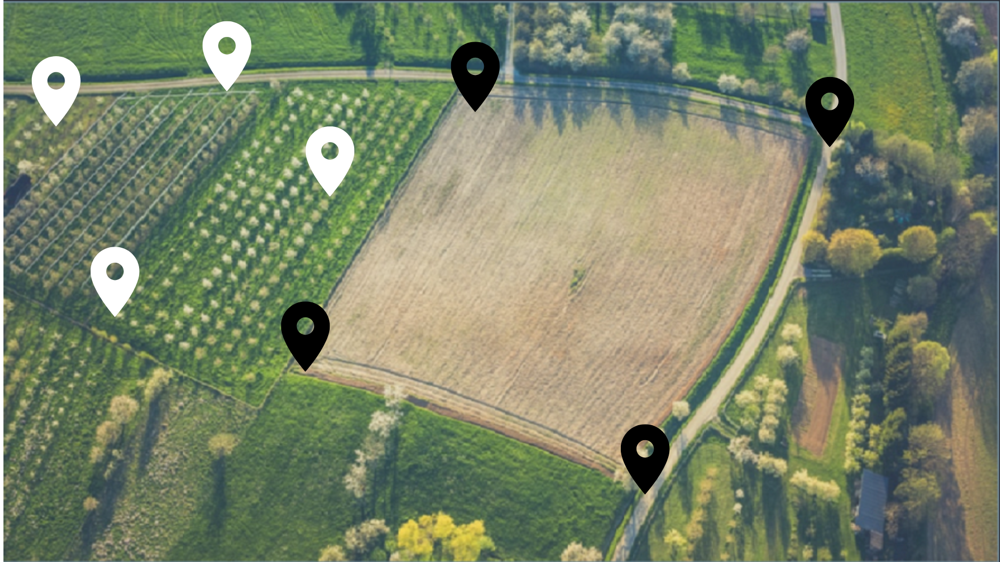

MODULO CULTIVO
INFORMACIÓN SATELITAL
En 2022, las exportaciones de café disminuyeron 8% a poco más de 11,4 millones de sacos de 60 kg de café verde frente a los más de 12,4 millones de sacos puestos en los mercados internacionales a lo largo de 2021. En diciembre las exportaciones cayeron 12% a poco más de un millón de sacos versus los casi 1,2 millones exportados en el mismo mes de 2021.
En 2022, las exportaciones de café disminuyeron 8% a poco más de 11,4 millones de sacos de 60 kg de café verde frente a los más de 12,4 millones de sacos puestos en los mercados internacionales a lo largo de 2021. En diciembre las exportaciones cayeron 12% a poco más de un millón de sacos versus los casi 1,2 millones exportados en el mismo mes de 2021.
INFORMACIÓN SATELITAL
MODULO INSUMOS
FERTILIZANTES
Nitrogenados
100 und
Fosfatados
100 und
Potásico
100 und
Orgánicos
100 und
Micronutriente
100 und
Líquidos
100 und
FERTILIZANTE

SEMILLAS

LISTA DE SEMILLAS
CILANTRO
700 und
GIRASOL
80 und
PEREGIL
10 und
GUAYABA
100 und
PAPAYA
800 und
FRIJOS
350 und
MODULO SENSORES
TEMPERATURA GENERAL
SENSOR 1
1 und
PH - RADIACION - LLUVIA
PH SUELO
2 und
RADIACIÓN
1 und
LLUVIA
1 und
SENSORES METEORILOGICOS
SENSOR IMAGEN 1

SENSOR IMAGEN 2

MODULO CULTIVO
INFORMACIÓN SATELITAL
En 2022, las exportaciones de café disminuyeron 8% a poco más de 11,4 millones de sacos de 60 kg de café verde frente a los más de 12,4 millones de sacos puestos en los mercados internacionales a lo largo de 2021. En diciembre las exportaciones cayeron 12% a poco más de un millón de sacos versus los casi 1,2 millones exportados en el mismo mes de 2021.
En 2022, las exportaciones de café disminuyeron 8% a poco más de 11,4 millones de sacos de 60 kg de café verde frente a los más de 12,4 millones de sacos puestos en los mercados internacionales a lo largo de 2021. En diciembre las exportaciones cayeron 12% a poco más de un millón de sacos versus los casi 1,2 millones exportados en el mismo mes de 2021.